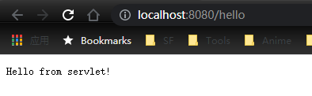
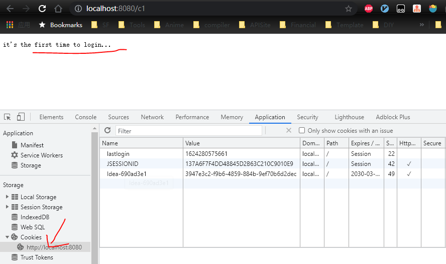
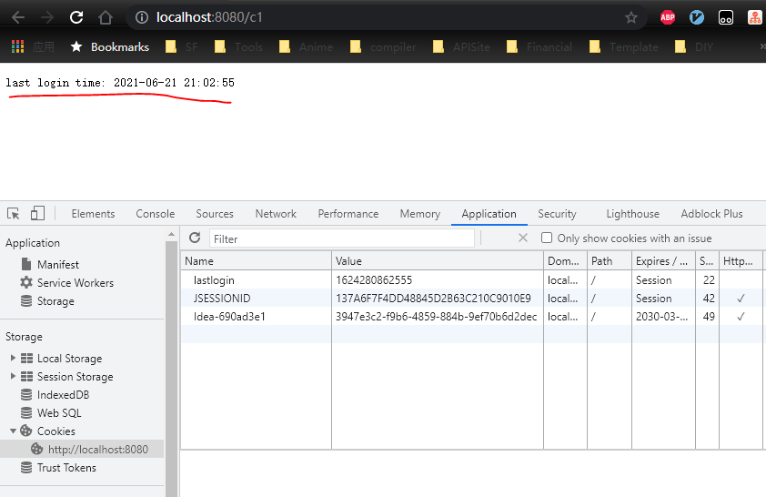
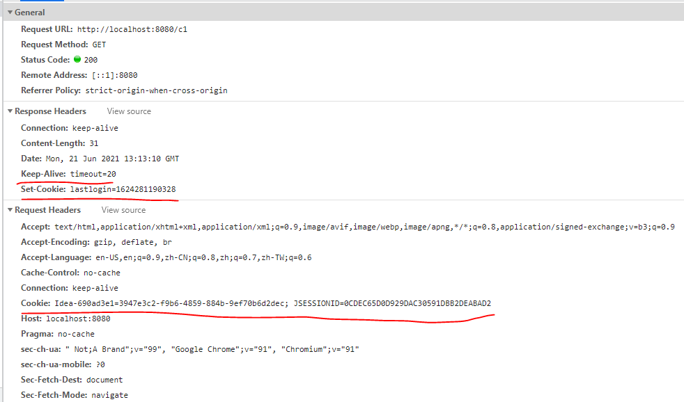
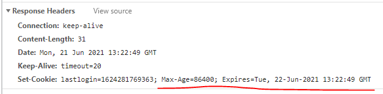

视频练习
Tomcat 安装
去官网 Tomcat 选择版本下载
解压后，去到目录的 bin 文件夹下，点击 startup.bat 启动服务器
访问 localhost:8080 看到网页，安装成功
点击 shutdown.bat 或关闭终端，停止程序
config -> server.xml 是只要的配置文件，可以配置端口号(Connector)，域名(Host)等信息
webapps 下面的每一个文件夹都是一个 project，可以再地址后面直接跟 project 名字访问，比如 http://localhost:8080/docs
提问 如果 Host 域名改成其他的值，比如 www.abc.com 之后，直接再 browser 输入地址还能访问到该网页吗
不能。需要该本机 hosts 文件。browser 访问地址时，先查看本机 hosts 文件配置，如果有匹配的，直接返回，没有再联网到 DNS 做请求。DNS 那边肯定没有配置这个地址的，配置了也不是你想要的。
山寨一个 ROOT 复制 webapps 下的 ROOT 重命名成 myproject, 删除所有内容，只保留 WEB-INF 文件夹。修改这个文件夹里面的 web.xml 内容，只需要保留 web-app 这个 node 里面的内容，中间节点可以删除。在 web-inf 同级目录下添加新的 index.html 页面，内容为简单的 Hello world. 启动 tomcat，访问 http://localhost:8080/myproject 可以看到新页面
1 2 3 4 5 6 7 8 9 10 11 12 13 <!DOCTYPE html > <html > <head > <meta charset ="UTF-8" > <title > myproject</title > </head > <body > <h1 > Wryyyyy.....</h1 > </body > </html >
项目目录结构 1 2 3 4 5 6 7 8 9 10 11 12 13 14 --webapps: Tomcat服务器的 web 目录 -ROOT -myproject: 网站的目录名 -WEB-INF -classes：Java 程序 -lib: web应用所以来的jar包 -web.xml: 网站配置文件 -index.html: 默认的首页 -static -css -style.css -js -img -...
Servlet
Servlet 是 SUN 公司开发动态 web 的一门技术
Sun 在这些 API 中提供了一个接口叫做 Servlet，开发只需两部分
编写一个类实现 Servlet 接口
把开发好的 Java 类部署到 web 服务器中
实现了 Servlet 接口的 Java 程序叫做 Servlet
HelloServlet 目标：
建立起基本的实验架构
运行第一个程序
创建一个 Maven 项目作为综合项目 javaweb，将 src 文件夹删掉，后续的实验通过创建 module 的形式进行。这是一个空的项目，在父母目录的 pom 文件中加入基本依赖
1 2 3 4 5 6 7 8 9 10 11 12 13 14 15 16 17 18 <dependencies > <dependency > <groupId > javax.servlet</groupId > <artifactId > javax.servlet-api</artifactId > <version > 4.0.1</version > <scope > provided</scope > </dependency > <dependency > <groupId > javax.servlet.jsp</groupId > <artifactId > javax.servlet.jsp-api</artifactId > <version > 2.3.3</version > <scope > provided</scope > </dependency > </dependencies >
新建 module 选择 Maven 项目 -> Create from artchetype -> maven-archtype-webapp 后面再填写一写基本的项目信息即可。
默认根据模板创建出来的项目是没有 Java 等基本目录的需要自己创建. 期望目录如下
1 2 3 4 main ├─java ├─webapp └─resources
建完 Java 文件夹后还要右键 mark as source root, 不然不能添加 Java class 文件。
创建完成后观察父子项目的 pom 文件可以发现，两个文件中有互相的引用
再 java 文件夹下创建 HelloServlet 并继承自 HttpServlet, 重写 doGet 方法
1 2 3 4 5 6 @Override protected void doGet (HttpServletRequest req, HttpServletResponse resp) throws ServletException, IOException System.out.println("Into HelloServlet..." ); PrintWriter writer = resp.getWriter(); writer.print("Hello from servlet!" ); }
我们写的是 Java code server 是不识别的，所以要再 web-inf 下的 web.xml 中配置 mapping 关系，使得 url 访问对应地址时触发我们写的 Java 代码
1 2 3 4 5 6 7 8 9 10 11 12 13 14 15 16 17 18 <?xml version="1.0" encoding="UTF-8"?> <web-app xmlns ="http://xmlns.jcp.org/xml/ns/javaee" xmlns:xsi ="http://www.w3.org/2001/XMLSchema-instance" xsi:schemaLocation ="http://xmlns.jcp.org/xml/ns/javaee http://xmlns.jcp.org/xml/ns/javaee/web-app_4_0.xsd" version ="4.0" metadata-complete ="true" > <servlet > <servlet-name > hello</servlet-name > <servlet-class > org.jzeng.servlet.HelloServlet</servlet-class > </servlet > <servlet-mapping > <servlet-name > hello</servlet-name > <url-pattern > /hello</url-pattern > </servlet-mapping > </web-app >
代码到这里基本就写完了，接下来是 idea 配置 tomcat
Add Configuration… -> + 号 -> Tomcat Server -> local 选择本地安装的 tomcat
主要查看 Application server， JRE， port 这些信息。可以看到有个 Warning，说是 No artifacts marked for deployment. 直接选择 Deployment tab -> + 号 选择 servlet01:war 即可。貌似选第二个也不会出问题. 点击运行启动程序，会默认弹出浏览器，输入地址 http://localhost:8080/hello 查看结果

PS: 这个页面上有个 Application context 默认自带 /servlet01_war 这个值的，有了的话，地址默认要带这个路径的，不想要的话直接用 / 就行
Servlet 类关系图 TODO - 明天用 UML 画一下 servlet 个类关系图，并简要提及一下代码实现
Servlet 的工作原理 TODO
Servlet mapping 的书写 可以是一对一
1 2 3 4 <servlet-mapping > <servlet-name > hello</servlet-name > <url-pattern > /hello</url-pattern > </servlet-mapping >
可以是一对多
1 2 3 4 5 6 7 8 <servlet-mapping > <servlet-name > hello</servlet-name > <url-pattern > /hello</url-pattern > </servlet-mapping > <servlet-mapping > <servlet-name > hello</servlet-name > <url-pattern > /hello1</url-pattern > </servlet-mapping >
也支持通配符
1 2 3 4 <servlet-mapping > <servlet-name > hello</servlet-name > <url-pattern > *.abc</url-pattern > </servlet-mapping >
编写 ErrorServlet 新加 class 文件
1 2 3 4 5 6 7 8 9 public class ErrorServlet extends HttpServlet @Override protected void doGet (HttpServletRequest req, HttpServletResponse resp) throws ServletException, IOException resp.setContentType("text/html" ); resp.setCharacterEncoding("utf-8" ); PrintWriter writer = resp.getWriter(); writer.print("<h1>404</h1>" ); } }
对应的 web.xml 中添加内容
1 2 3 4 5 6 7 8 <servlet > <servlet-name > error</servlet-name > <servlet-class > org.jzeng.servlet.ErrorServlet</servlet-class > </servlet > <servlet-mapping > <servlet-name > error</servlet-name > <url-pattern > /*</url-pattern > </servlet-mapping >
PS: * 不能省略斜杠，不然项目启动会失败
ServletContext ServletContext 提供了一个 servlet 之间通信的媒介，是位于 servlet 之上的
TODO：简单来个图
实际开发中尽量避免直接使用它，下面介绍的方法都有替代方案，数据共享用 session/cookie, context 参数基本不推荐使用了，转发用重定向，properties 使用反射读取。经典白学。。。只做引子
数据共享 目标：
创建第二个 module 实践 ServletContext 实现 servlet 之间的数据共享
实验描述：在 module2 中新建两个 servlet, 分别向 ServletContext 中 set 值和从 ServletContext 中 get 值。然后这两个 servlet 配置到 web.xml 中。配置 tomcat 启动项，将 deployment 下原本的 module1 配置移除，不然两个都会打包，会变慢。启动后，浏览器先访问 localhost:8080/setattr 再访问 localhost:8080/getattr 就可以看到之前 set 的属性被正确获取
1 2 3 4 5 6 7 8 9 10 11 12 13 14 15 16 17 18 19 20 21 22 23 24 25 26 27 28 29 public class SetAttrServlet extends HttpServlet @Override protected void doGet (HttpServletRequest req, HttpServletResponse resp) throws ServletException, IOException ServletContext context = this .getServletContext(); context.setAttribute("name" , "jack" ); } @Override protected void doPost (HttpServletRequest req, HttpServletResponse resp) throws ServletException, IOException doGet(req, resp); } } public class GetAttrServlet extends HttpServlet @Override protected void doGet (HttpServletRequest req, HttpServletResponse resp) throws ServletException, IOException ServletContext context = this .getServletContext(); String name = (String)context.getAttribute("name" ); resp.setContentType("text/html" ); resp.setCharacterEncoding("utf-8" ); resp.getWriter().print("my name: " + name); } @Override protected void doPost (HttpServletRequest req, HttpServletResponse resp) throws ServletException, IOException doGet(req, resp); } }
获取初始化参数 目标：体验 context param 的使用，实际中基本不使用这种方式
描述：在 web.xml 中添加 context param 标签并注册，新写一个 servlet 拿到这个 param 并输出到页面
1 2 3 4 5 6 7 8 9 10 11 12 13 public class GetContextParamServlet extends HttpServlet @Override protected void doGet (HttpServletRequest req, HttpServletResponse resp) throws ServletException, IOException ServletContext context = this .getServletContext(); String name = context.getInitParameter("name" ); resp.getWriter().print("manga name: " + name); } @Override protected void doPost (HttpServletRequest req, HttpServletResponse resp) throws ServletException, IOException doGet(req,resp); } }
1 2 3 4 5 6 7 8 9 10 11 12 13 <context-param > <param-name > name</param-name > <param-value > jojo</param-value > </context-param > <servlet > <servlet-name > getContextParam</servlet-name > <servlet-class > org.jzheng.servlet.GetContextParamServlet</servlet-class > </servlet > <servlet-mapping > <servlet-name > getContextParam</servlet-name > <url-pattern > /getcontextparam</url-pattern > </servlet-mapping >
转发 目标：体验转发特点
描述：新建一个 servlet 将请求转发到上面的参数初始化实验的地址去
1 2 3 4 5 6 7 8 9 10 11 12 13 public class ForwardServlet extends HttpServlet @Override protected void doGet (HttpServletRequest req, HttpServletResponse resp) throws ServletException, IOException ServletContext context = this .getServletContext(); context.getRequestDispatcher("/getcontextparam" ).forward(req, resp); } @Override protected void doPost (HttpServletRequest req, HttpServletResponse resp) throws ServletException, IOException doGet(req, resp); } }
1 2 3 4 5 6 7 8 9 <servlet > <servlet-name > forward</servlet-name > <servlet-class > org.jzheng.servlet.ForwardServlet</servlet-class > </servlet > <servlet-mapping > <servlet-name > forward</servlet-name > <url-pattern > /forward</url-pattern > </servlet-mapping >
重启 tomcat，访问 localhost:8080/forward 显示之前实验的页面
TODO: 补一个转发和重定向的简图
PS：转发的请求，地址不会发生变化
加载 Properties 目标：Servlet 读取 resources 文件夹下的 properties 文件内容
描述：resources 文件夹下新建一个 db.properties 文件，写入测试内容。新建 PropertiesServlet 读取这个文件并将信息显示在页面上
1 2 3 4 5 6 7 8 9 10 11 12 13 14 15 16 17 public class PropertiesServlet extends HttpServlet @Override protected void doGet (HttpServletRequest req, HttpServletResponse resp) throws ServletException, IOException ServletContext context = this .getServletContext(); InputStream is = context.getResourceAsStream("/WEB-INF/classes/db.properties" ); Properties prop = new Properties(); prop.load(is); String uname = (String) prop.get("username" ); String pwd = (String) prop.get("password" ); resp.getWriter().print("name: " + uname + "; password: " + pwd); } @Override protected void doPost (HttpServletRequest req, HttpServletResponse resp) throws ServletException, IOException doGet(req, resp); } }
1 2 3 4 5 6 7 8 9 <servlet > <servlet-name > prop</servlet-name > <servlet-class > org.jzheng.servlet.PropertiesServlet</servlet-class > </servlet > <servlet-mapping > <servlet-name > prop</servlet-name > <url-pattern > /prop</url-pattern > </servlet-mapping >
访问 localhost:8080/prop 显示 properties 文件中设置的用户名和密码
prop 不能提取的问题 如果 properties 是卸载 Java class 同目录下的，那么，编译的时候，并不会被提取到 WEB-INF 文件夹中去。需要在 module2 的 pom 中添加配置修复
1 2 3 4 5 6 7 8 9 10 11 12 13 14 15 16 17 18 19 20 <build > <resources > <resource > <directory > src/main/resources</directory > <includes > <include > **/*.properties</include > <include > **/*.xml</include > </includes > </resource > <resource > <directory > src/main/java</directory > <includes > <include > **/*.properties</include > <include > **/*.xml</include > </includes > <filtering > true</filtering > </resource > </resources > </build >
HttpServletResponse web 服务器接收到客户端的 Http 请求，会封装两个对象 HttpServletReqeust 代表请求，HttpServletResponse 代表响应
设置 reponse 自动下载 目标：通过设置 response 头信息，实现发送请求后，下载文件的效果
描述：新建 servlet, 设置响应头包含 response.setHeader("Content-Disposition", "attachment;filename="+filename); 即可
1 2 3 4 5 6 7 8 9 10 11 12 13 14 15 16 17 18 19 20 21 22 23 public class ResponseServlet extends HttpServlet @Override protected void doGet (HttpServletRequest req, HttpServletResponse resp) throws ServletException, IOException String filePath = "C:\\Users\\jack\\IdeaProjects\\javaweb\\response\\src\\main\\resources\\tree.png" ; String fileName = filePath.substring(filePath.lastIndexOf("//" ) + 1 ); resp.setHeader("Content-Disposition" , "attachment;filename=" + fileName); byte [] buf= new byte [1024 ]; int len = 0 ; InputStream is = new FileInputStream(filePath); OutputStream os = resp.getOutputStream(); while ((len=is.read(buf))>0 ) { os.write(buf, 0 , len); } os.close(); is.close(); } @Override protected void doPost (HttpServletRequest req, HttpServletResponse resp) throws ServletException, IOException doGet(req, resp); } }
设置 response 自动刷新 这个实验用到的技术不实用了，但是他最后的效果我挺喜欢的，还是手动撸一遍玩一下
目标：页面显示一个定时刷新的数字验证码
1 2 3 4 5 6 7 8 9 10 11 12 13 14 15 16 17 18 19 20 21 22 23 24 25 26 27 28 29 30 31 32 33 34 35 36 37 38 public class ImageServlet extends HttpServlet @Override protected void doGet (HttpServletRequest req, HttpServletResponse resp) throws ServletException, IOException resp.setHeader("refresh" , "3" ); BufferedImage image = new BufferedImage(80 , 20 , BufferedImage.TYPE_INT_RGB); Graphics2D g = (Graphics2D)image.getGraphics(); g.setColor(Color.white); g.fillRect(0 , 0 , 80 , 20 ); g.setColor(Color.BLUE); g.setFont(new Font(null , Font.BOLD, 20 )); g.drawString(makeNum(), 0 , 20 ); resp.setContentType("image/jpeg" ); resp.setDateHeader("expires" , -1 ); resp.setHeader("Cache-Control" , "no-cache" ); resp.setHeader("Pragma" , "no-cache" ); ImageIO.write(image, "jpg" , resp.getOutputStream()); } private String makeNum () Random random = new Random(); String num = random.nextInt(9999999 ) + "" ; StringBuffer sb = new StringBuffer(); for (int i=0 ; i<7 -num.length(); i++) { sb.append("0" ); } num = sb.toString() + num; return num; } @Override protected void doPost (HttpServletRequest req, HttpServletResponse resp) throws ServletException, IOException doGet(req, resp); } }
1 2 3 4 5 6 7 8 <servlet > <servlet-name > imageServlet</servlet-name > <servlet-class > com.jzheng.servlet.ImageServlet</servlet-class > </servlet > <servlet-mapping > <servlet-name > imageServlet</servlet-name > <url-pattern > /image</url-pattern > </servlet-mapping >
实现重定向 redirect 和 forward 的区别: redirect url 会变, 状态码 302， forward 不会，状态码 200
实验目标：体验一下 redirect 和 jsp
步骤描述：首页新建一个表单，同时新建一个 RequestServlet 作为表单的提交地址。设置表单 action 属性指向这个 servlet。servlet 的末尾添加 redirect 的逻辑指向 success.jsp
新表单
1 2 3 4 5 6 7 8 9 10 11 <html> <body> <h2>Hello World!</h2> <%--${pageContext.request.contextPath} for project --%> <form action="${pageContext.request.contextPath}/login" method="get" > name: <input type="text" name="username" ><br> pwd: <input type="password" name="password" ><br> <input type="submit" > </form> </body> </html>
1 2 3 4 5 6 7 8 @Override protected void doGet (HttpServletRequest req, HttpServletResponse resp) throws ServletException, IOException System.out.println("in to request servlet" ); String uname = req.getParameter("username" ); String pwd = req.getParameter("password" ); System.out.println(uname + ";" + pwd); resp.sendRedirect("/success.jsp" ); }
重定向 jsp
1 2 3 4 5 6 <html> <body> <h2>Success!</h2> </form> </body> </html>
别忘了在 web.xml 那边注册新加的 servlet
1 2 3 4 5 6 7 8 <servlet > <servlet-name > requestServlet</servlet-name > <servlet-class > com.jzheng.servlet.RequestServlet</servlet-class > </servlet > <servlet-mapping > <servlet-name > requestServlet</servlet-name > <url-pattern > /login</url-pattern > </servlet-mapping >
Cookies 会话： 可以简单的理解为从打开浏览器访问页面到关闭浏览器，这一段时间内，浏览器和服务器之间的通信关系
有状态的会话： 需要通过 session 或者 cookie 记录这个状态。cookie 记录在客户端，session 记录在服务器端
Cookies 实验01 目的：通过在 response 中设置 cookie 的方式记录客户端访问时间
步骤：新建 servlet，并在处理 request 的时候，在对应的 response 中返回当前时间。如果是第一次访问，则打印：这是第一次访问
实现：
创建 servlet，接收 req 并检查其中的 cookies 如果没有 lastlogin 相关的 cookie 则打印 第一次访问，有则打印上次访问时间
1 2 3 4 5 6 7 8 9 10 11 12 13 14 15 16 17 18 19 20 21 22 23 24 25 26 27 28 29 30 31 32 33 34 public class CookieServlet01 extends HttpServlet @Override protected void doGet (HttpServletRequest req, HttpServletResponse resp) throws ServletException, IOException req.setCharacterEncoding("utf-8" ); resp.setCharacterEncoding("utf-8" ); Cookie loginCookie = null ; Cookie[] cookies = req.getCookies(); for (Cookie cookie : cookies) { if (cookie.getName().equals("lastlogin" )) { loginCookie = cookie; } } if (loginCookie == null ) { resp.getWriter().print("it's the first time to login..." ); } else { String strDateFormat = "yyyy-MM-dd HH:mm:ss" ; SimpleDateFormat sdf = new SimpleDateFormat(strDateFormat); resp.getWriter().print("last login time: " + sdf.format(new Date(Long.parseLong(loginCookie.getValue())))); } Cookie updateLoginTime = new Cookie("lastlogin" , System.currentTimeMillis()+"" ); resp.addCookie(updateLoginTime); } @Override protected void doPost (HttpServletRequest req, HttpServletResponse resp) throws ServletException, IOException doGet(req, resp); } }
配置 web.xml
1 2 3 4 5 6 7 8 <servlet > <servlet-name > cookie01</servlet-name > <servlet-class > com.jzheng.CookieServlet01</servlet-class > </servlet > <servlet-mapping > <servlet-name > cookie01</servlet-name > <url-pattern > /c1</url-pattern > </servlet-mapping >
启动 tomcat 第一次访问数据展示. 显示第一次登录信息，访问后，servlet 会向 resp 中插入 login cookie 的信息

第二次访问数据展示，时间显示为上次访问 servlet 的时间了。

观察 Network 中的 response 也能发现一些有趣的信息，他会显示默认的 cookie 有效时间 20mins, 还会显示 resp 中为 cookie 设置了值

Cookies 实验02 关闭浏览器，再访问这个网址的时候，都会显示第一次登录(IE) 那么怎么为他设置一个有效期限呢，可以通过 maxAge 属性. 设置后可以看到 resp 中多了过期时间的属性，关闭浏览器再登录还是可以看到时间

cookie 一些细节
一个 cookie 只能保存一个信息
一个 web 站点可以给浏览器发送多个 cookie, 最多存放 20 个 cookie
cookie 大小有限制 4kb
浏览器的 cookie 上限时 300 个
删除 cookie
不设置有效期，删除自动清理
设置有效期为 0, updateLoginTime.setMaxAge(0); 访问 c1 后访问 c2 可以看到控制台中 login 的 cookie 删掉了
问题 servlet 中尝试使用 cookie.getName() == “xxx” 的表示，即使 name 和 xxx 值时一样的还是会判 false, 为什么？
我猜测，可能 name 时通过 new String() 的方式生成的，具体得看底层实现，测试一下
既然 session 时 server 和 client 之间的对话，那多 server 的情况下，这个 session 时怎么维护的？听 yi 的说法，我司貌似时登录的时候寻在对应的 server， 并不是存在公共的地方的
Session 什么是 Session：
服务器会给每个用户(浏览器)创建一个 Session 对象
一个 Session 独占一个浏览器，只要浏览器没关闭，这个 session 就存在
用户登录之后，整个网站都可以访问；保存用户、购物车的信息
Session 和 cookie 的区别
cookie 把用户数据写到浏览器端保存
session 把数据写到用户独占的 session 中，保存在 server 端(保存重要数据，避免资源浪费)
session 由服务创建
使用场景：
保存一个登录用户的信息
购物车信息
整个网站中经常使用的数据
TODO：画个图
思考：我是不是可以通过拿到用户的 session id 来 hack 进系统？
比 session 还高一层的变量叫 ServletContext, JSP 中交 ApplicationContext
实验 01 测试 session 的生命周期。session 是当你打开网页的时候就会生成的一个变量。实验中，我们在 servlet 的 req 对象中取得 session 对象，并判断是否存在，并打印 log
1 2 3 4 5 6 7 8 9 10 11 12 13 14 15 16 17 18 19 20 21 22 23 public class SessionServlet01 extends HttpServlet @Override protected void doGet (HttpServletRequest req, HttpServletResponse resp) throws ServletException, IOException req.setCharacterEncoding("UTF-8" ); resp.setCharacterEncoding("UTF-8" ); resp.setContentType("text/html;charset=utf-8" ); HttpSession session = req.getSession(); session.setAttribute("name" , "jack" ); if (session.isNew()) { resp.getWriter().write("session is new: " + session.getId()); } else { resp.getWriter().write("session already exist: " + session.getId()); } } @Override protected void doPost (HttpServletRequest req, HttpServletResponse resp) throws ServletException, IOException doGet(req, resp); } }
1 2 3 4 5 6 7 8 <servlet > <servlet-name > session01</servlet-name > <servlet-class > com.jzheng.SessionServlet01</servlet-class > </servlet > <servlet-mapping > <servlet-name > session01</servlet-name > <url-pattern > /s1</url-pattern > </servlet-mapping >
启动 tomcat，自动弹出首页，这时 session 已经建立，再访问 s1 显示已经存在。查看 Network reqeust 和 Application 的 cookie 信息可以看到，打印的 session id 和 request/cookie 中的 jsession id 的对应的
PS：如果新启动一个 browser，直接访问 s1 会显示是新 session 的
PPS: 在 web 的实现中，它会将 session id 塞到 cookie 的 jsession 中(貌似没有代码体现)
实验02 新建一个 servlet 获取上面实验中塞的值，并打印
1 2 3 4 5 6 7 8 9 10 11 12 13 14 public class SessionServlet02 extends HttpServlet @Override protected void doGet (HttpServletRequest req, HttpServletResponse resp) throws ServletException, IOException req.setCharacterEncoding("UTF-8" ); resp.setCharacterEncoding("UTF-8" ); resp.setContentType("text/html;charset=utf-8" ); HttpSession session = req.getSession(); System.out.println("session attribute name, value is: " + session.getAttribute("name" )); } }
再配置 web.xml，启动 tomcat，先访问 s1 再访问 s2 可以看到终端答应 name log
实验03 通过 session 实现对象的存储
新建一个 person 类
1 2 3 4 5 public class Person private String name; private int age; }
将 SessionServlet01 中设置 name 的语句改为设置对象 session.setAttribute("name", new Person("jack", 2));
启动 tomcat 访问 s1 再访问 s2 终端答应对象信息 session attribute name, value is: Person{name='jack', age=2}
实验04 注销 session，可以直接 invalid 的方式注销
1 2 3 4 5 6 7 8 public class SessionServlet03 extends HttpServlet @Override protected void doGet (HttpServletRequest req, HttpServletResponse resp) throws ServletException, IOException HttpSession session = req.getSession(); session.removeAttribute("name" ); session.invalidate(); } }
update web.xml 设置到 s3 这个节点。启动 tomcat，访问 s1 然后访问 s3 再访问 s1 发现 session id 变了
除了上面的方式还可以通过配置 web.xml 中的 session-config 达到目的
1 2 3 4 <session-config > <session-timeout > 1</session-timeout > </session-config >
启动 tomcat 访问 s1 然后等一分钟再刷新，发现 id 改变
JSP JSP 是 Java server pages 的简写，和 servlet 一样，用于动态 web 技术
最大的特点是：写 JSP 就像写 HTML 一样
区别：
Html 只给用户提供静态的数据
JSP 页面中可以嵌入 Java 代码，提供动态数据
JSP 原理 思路：JSP 怎么执行的？
新建一个 jsp-investigation project 举例。我当前的实验环境是 Mac + idea 社区版 + smart tomcat，启动项目后可以在 /Users/myname/.SmartTomcat/javaweb/jsp-investigation/work/Catalina/localhost/jsp-investigation/ 下看到对应的 jsp 转化之后的 Java 文件。当访问 jsp 文件时才会动态生成。
浏览器向服务器发送请求，不管访问什么资源，其实都是在访问 Servlet，JSP 最终也是转化为 servlet
所以大致流程可以表示为 用户 -> servet -> jsp -> (谁做的转化，tomcat 还是 servlet？)java -> class -> html -> return -> user 这么一个过程
TODO 图解
JSP 页面中， Java代码原封不动的输出，HTML 代码就会转化成 out.write("xxx") 的形式输出
下面是自带的 index.jsp 翻译后的 Java 文件
1 2 3 4 5 6 7 8 9 10 11 12 13 14 15 16 17 18 19 20 21 22 23 24 25 26 27 28 29 30 31 32 33 34 35 36 37 38 39 40 41 42 43 44 45 46 47 48 49 50 51 52 53 54 55 56 57 58 59 60 61 62 63 public final class index_jsp extends org .apache .jasper .runtime .HttpJspBase implements org .apache .jasper .runtime .JspSourceDependent , org .apache .jasper .runtime .JspSourceImports { public void _jspInit () } public void _jspDestroy () } public void _jspService (final javax.servlet.http.HttpServletRequest request, final javax.servlet.http.HttpServletResponse response) throws java.io.IOException, javax.servlet.ServletException { if (!javax.servlet.DispatcherType.ERROR.equals(request.getDispatcherType())) { final java.lang.String _jspx_method = request.getMethod(); if ("OPTIONS" .equals(_jspx_method)) { response.setHeader("Allow" ,"GET, HEAD, POST, OPTIONS" ); return ; } if (!"GET" .equals(_jspx_method) && !"POST" .equals(_jspx_method) && !"HEAD" .equals(_jspx_method)) { response.setHeader("Allow" ,"GET, HEAD, POST, OPTIONS" ); response.sendError(HttpServletResponse.SC_METHOD_NOT_ALLOWED, "JSPs only permit GET, POST or HEAD. Jasper also permits OPTIONS" ); return ; } } final javax.servlet.jsp.PageContext pageContext; javax.servlet.http.HttpSession session = null ; final javax.servlet.ServletContext application; final javax.servlet.ServletConfig config; javax.servlet.jsp.JspWriter out = null ; final java.lang.Object page = this ; javax.servlet.jsp.JspWriter _jspx_out = null ; javax.servlet.jsp.PageContext _jspx_page_context = null ; response.setContentType("text/html" ); pageContext = _jspxFactory.getPageContext(this , request, response, null , true , 8192 , true ); _jspx_page_context = pageContext; application = pageContext.getServletContext(); config = pageContext.getServletConfig(); session = pageContext.getSession(); out = pageContext.getOut(); _jspx_out = out; out.write("<html>\n" ); out.write("<body>\n" ); out.write("<h2>Hello World!</h2>\n" ); out.write("</body>\n" ); out.write("</html>\n" ); } }
JSP 基础语法 了解即可。新建普通 maven 项目，右键 module -> Add Framework Support -> Web Application。通过这种方式创建的 web 项目，更新的时候，有热更新的效果
1 2 3 4 5 6 7 8 9 10 11 12 13 14 15 16 17 18 19 20 21 22 23 24 25 26 27 28 29 30 31 32 33 34 35 36 37 38 39 40 41 42 43 <!-- jsp 表达式 --> <%= new java.util.Date() %> <!-- 脚本片段 --> <% int sum = 0 ;for (int i = 0 ; i < 100 ; i++) { sum+=i; } out.println("result = " + sum); %> <!-- 片段中间嵌入 html --> <% int x = 10 ; out.print("x = " + x); %> <p> 这是片段分割 </p> <% int y = 10 ; out.print("y = " + y); %> <!-- JSP 批量生产网页元素 --> <% for (int i = 0 ; i < 3 ; i++) { %> <h1>Hello <%=i%></h1> <% } %> <!-- jsp 声明，声明的内容会放在类中，其他的代码段则会生成在 _jspService 方法中 --> <%! static { System.out.println("Loading servlet!" ); } private int globalVar = 0 ; public void test () System.out.println("into method test..." ); } %> <!-- HTML COMMENT --> <%!-- JSP COMMENT --%> jsp 的注释并不会在页面源代码中显示，html 可以
和 index.jsp 同级目录下新建一个页面 jsp2.jsp 并在 body 中写一个错误代码片段 <% int x=1/0; %> 访问 http://localhost:8080/jsp2.jsp 可以看到页面抛出异常
这个处理不是很好，可以在这个页面的头部添加 <%@ page errorPage="error/500.jsp" %> 指定错误页面
这个页面还可以配置错误的图片，不过本地测试的时候需要重启 idea 才能看到，不然图片是损坏状态
除了上面的配置办法，还可以在 web.xml 中设置这些页面
1 2 3 4 5 6 7 8 9 <error-page > <error-code > 404</error-code > <location > /error/404.jsp</location > </error-page > <error-page > <error-code > 500</error-code > <location > /error/500.jsp</location > </error-page >
随便访问一个不存在的页面即可得到 404 error page, http://localhost:8080/jsp2asdfasd.jsp
include 标签
1 2 3 <%@include file="common/header.jsp" %> <h> 我是身体 </h> <%@include file="common/footer.jsp" %>
也可以使用标签的形式，效果一样
1 2 3 <jsp:include page="/common/header.jsp" /> <h> 我是身体 </h> <jsp:include page="/common/footer.jsp" />
区别：第一种将页面源码包含在 class 文件中，第二种是通过静态方法引入页面
九大内置对象
PageContext 存东西
Request 存东西
Response
Session 存东西
Application - ServletContext 存东西
config - ServletConfig
out
page
exception
实验01 测试内置对象作用域 新建一个 jsp 页面再里面通过内置的对象设置值，并通过 pageContext.findAttribute 查找对应的值
1 2 3 4 5 6 7 8 9 10 11 12 13 14 15 16 17 18 19 20 21 22 23 24 25 26 <%@ page contentType="text/html;charset=UTF-8" language="java" %> <html> <head> <title>demo01</title> </head> <body> <% pageContext.setAttribute("name1" , "val1" ); request.setAttribute("name2" , "val2" ); session.setAttribute("name3" , "val3" ); application.setAttribute("name4" , "val4" ); String n1 = (String)pageContext.findAttribute("name1" ); %> <h1>取得值为</h1> <h3>s1: ${name1}</h3> <h3>s1<%=n1%></h3> <h3>${name2}</h3> <h3>${name3}</h3> <h3>${name4}</h3> <h3>${name5}</h3> </body> </html>
不得不说，这里视频教学有问题，很大的误导了我，查了半天，还是通过其他看这个视频代码的人的 project 才找到根源。如果你使用 EL 表达式，就不需要使用 pageContext.findAttribute 方法了，拿就行。如果用的是 <%=%> 这种方式才需要使用前面提到的方式拿值。
如果使用 EL 表达式，值为 null 则页面不显示，如果用 <%=%> 值为空则页面显示 null 字样
实验02 新建一个 jsp page, get 语句同上，先访问上面的页面再访问这个新页面，只有 session 和 application level 的变量值可以显示
实验03 pageContext.setAttribute(key, value, scope) 支持直接设置作用域
JSP 标签 EL表达式：${}
实验01 EL 标签转发 新建 jsptag.jsp 通过 jsp:forward + param 将参数转发给 jsptag2.jsp 并再页面上显示
1 2 3 4 <jsp:forward page="/jsptag2.jsp" > <jsp:param name="name" value="jack" /> <jsp:param name="age" value="100" /> </jsp:forward>
显示页面代码
1 2 3 4 5 name: <%=request.getParameter("name" )%><br> age: <%=request.getParameter("age" )%><br> name: ${param.get("name" )}<br> age: ${param.get("age" )}<br>
JSTL JSTL 时为了弥补 HTML 标签的不足
实验时抛异常 org.apache.jasper.JasperException: 无法在web.xml或使用此应用程序部署的jar文件中解析绝对uri：[http://java.sun.com/jsp/jstl/core]
需要将
jstl-1.2.jar
standard-1.1.2.jar
jstl-impl-1.2.jar
jstl-api-1.2.jar
拷贝到 tomcat 的 lib 文件夹中即可，需要重启 tomcat
介绍了 if, when 和 foreach 语法
java bean 实体类
Java bean 的特定写法
必须有无参构造
属性私有化
必须有对应的 get/set 方法
一般用来和数据库字段做映射 ORM
ORM：对象关系映射
MVC三层架构
Controller: 接收请求；交给业务层处理对应的代码；控制视图跳转
View: 展示数据，提供链接发起 servlet 请求
Model: 对应 service + Dao 部分
过滤器 Filter 为某种特殊的需求提供同意的处理方式
配置依赖
实现 Filter 接口
再 web.xml 中配置 filter 参数
实验描述：新建一个 servlet 类，返回中文内容。新建一个 filter 实现类提供 utf-8 转码。在 web.xml 中为 servlet 配置两个入口，一个入口经过 filter，另一个不经过。得到的结果，经过 filter 的中文能正常显示，没有经过的为乱码
新建 servlet
1 2 3 4 5 6 7 8 9 10 11 public class Show extends HttpServlet @Override protected void doGet (HttpServletRequest req, HttpServletResponse resp) throws ServletException, IOException resp.getWriter().print("你好，世界" ); } @Override protected void doPost (HttpServletRequest req, HttpServletResponse resp) throws ServletException, IOException doGet(req, resp); } }
配置 web.xml
1 2 3 4 5 6 7 8 9 10 11 12 <servlet > <servlet-name > Show</servlet-name > <servlet-class > org.jzheng.servlet.Show</servlet-class > </servlet > <servlet-mapping > <servlet-name > Show</servlet-name > <url-pattern > /show</url-pattern > </servlet-mapping > <servlet-mapping > <servlet-name > Show</servlet-name > <url-pattern > /filter/show</url-pattern > </servlet-mapping >
两个地址都能访问且给出乱码。添加 filter 实现
1 2 3 4 5 6 7 8 9 10 11 12 13 14 15 16 17 18 public class EncodingFilter implements Filter @Override public void init (FilterConfig filterConfig) throws ServletException System.out.println("filter init..." ); } @Override public void doFilter (ServletRequest servletRequest, ServletResponse servletResponse, FilterChain filterChain) throws IOException, ServletException servletResponse.setCharacterEncoding("UTF-8" ); servletResponse.setContentType("text/html;charset=UTF-8" ); filterChain.doFilter(servletRequest, servletResponse); } @Override public void destroy () System.out.println("filter destroy..." ); } }
配置 web.xml
1 2 3 4 5 6 7 8 <filter > <filter-name > EncodingFilter</filter-name > <filter-class > org.jzheng.servlet.EncodingFilter</filter-class > </filter > <filter-mapping > <filter-name > EncodingFilter</filter-name > <url-pattern > /filter/*</url-pattern > </filter-mapping >
重启服务器，访问 /show 还是乱码，访问 /filter/show 中文显示正常
PS: 从 server 的 log 可以看出 filter 在 server 启动时做一次 init, server 停止时做一次销毁
监听器 Listener 实验描述：新建一个监听器统计在线人数
实现监听器接口
注册到 web.xml
1 2 3 4 5 6 7 8 9 10 11 12 13 14 15 16 17 18 19 20 21 22 23 24 25 public class CountListener implements HttpSessionListener @Override public void sessionCreated (HttpSessionEvent httpSessionEvent) ServletContext context = httpSessionEvent.getSession().getServletContext(); Integer onlineCount = (Integer) context.getAttribute("OnlineCount" ); if (onlineCount == null ) { onlineCount = 1 ; } else { onlineCount += 1 ; } context.setAttribute("OnlineCount" , onlineCount ); } @Override public void sessionDestroyed (HttpSessionEvent httpSessionEvent) ServletContext context = httpSessionEvent.getSession().getServletContext(); Integer onlineCount = (Integer) context.getAttribute("OnlineCount" ); if (onlineCount == null ) { onlineCount = 0 ; } else { onlineCount -= 1 ; } context.setAttribute("OnlineCount" , onlineCount ); } }
1 2 3 <listener > <listener-class > org.jzheng.servlet.CountListener</listener-class > </listener >
restart 之后显示 3 个人，貌似时因为服务器默认会启动几个 session，redeploy 之后修复了。多个几个不同类型的浏览器，session 数量会上升
练习 使用过滤器做一个权限拦截。管理员登录后将信息存到 session 中，注销后从 session 中移除，如果没有登录则无法访问成功页面
新建登录界面 jsp
1 2 3 4 5 6 7 8 9 10 11 12 13 14 15 16 <%@ page contentType="text/html;charset=UTF-8" language="java" %> <html> <head> <title>login</title> </head> <body> <h1> 登录 </h1> <form action="/servlet/login" method="post" > <input type="text" name="username" > <input type="submit" > </form> </body> </html>
创建 login 对应的 servlet
1 2 3 4 5 6 7 8 9 10 11 12 13 14 15 16 17 public class LoginServlet extends HttpServlet @Override protected void doGet (HttpServletRequest req, HttpServletResponse resp) throws ServletException, IOException String username = req.getParameter("username" ); if (username.equals("admin" )) { req.getSession().setAttribute(Constant.USER_SESSION, req.getSession().getId()); resp.sendRedirect("/sys/success.jsp" ); } else { resp.sendRedirect("/error.jsp" ); } } @Override protected void doPost (HttpServletRequest req, HttpServletResponse resp) throws ServletException, IOException doGet(req, resp); } }
配置 web.xml
1 2 3 4 5 6 7 8 <servlet > <servlet-name > LoginServlet</servlet-name > <servlet-class > org.jzheng.servlet.LoginServlet</servlet-class > </servlet > <servlet-mapping > <servlet-name > LoginServlet</servlet-name > <url-pattern > /servlet/login</url-pattern > </servlet-mapping >
创建登录失败页面
1 2 3 4 5 6 7 8 9 <%@ page contentType="text/html;charset=UTF-8" language="java" %> <html> <head> <title>error</title> </head> <body> <h1> 登录失败 </h1> </body> </html>
启动测试，访问 localhost:8080/login.jsp 输入 admin 成功登录，输入其他内容，登录失败跳转到 error.jsp
完善流程，创建 logout 并移除 session 属性的操作. 在 success 页面添加 logout 超链接
1 2 3 4 5 6 7 8 9 10 11 <%@ page contentType="text/html;charset=UTF-8" language="java" %> <html> <head> <title>success</title> </head> <body> <h1> 登录成功 </h1> <p><a href="/servlet/logout">logout</a></p> </body> </html>
添加 logout 的 servlet 和 web.xml 配置
1 2 3 4 5 6 7 8 9 10 11 12 13 14 public class LogoutServlet extends HttpServlet @Override protected void doGet (HttpServletRequest req, HttpServletResponse resp) throws ServletException, IOException if (req.getSession().getAttribute(Constant.USER_SESSION) != null ) { req.getSession().removeAttribute(Constant.USER_SESSION); resp.sendRedirect("/login.jsp" ); } } @Override protected void doPost (HttpServletRequest req, HttpServletResponse resp) throws ServletException, IOException doGet(req, resp); } }
1 2 3 4 5 6 7 8 <servlet > <servlet-name > Logout</servlet-name > <servlet-class > org.jzheng.servlet.LogoutServlet</servlet-class > </servlet > <servlet-mapping > <servlet-name > Logout</servlet-name > <url-pattern > /servlet/logout</url-pattern > </servlet-mapping >
上面使用移除属性，而不是 invalid 达到 session 重用的效果。新建 session 是一个比较重的操作
重启之后，admin 登录，点击 logout 跳会到 login 页面。这里如果我们手动访问 sys/success.jsp 还是可以访问到。我们可以通过添加 filter，判断 USER_SESSION 是否为空作为跳转条件
新建 filter 类
1 2 3 4 5 6 7 8 9 10 11 12 13 14 15 16 17 18 19 20 21 22 23 public class SysFilter implements Filter @Override public void init (FilterConfig filterConfig) throws ServletException } @Override public void doFilter (ServletRequest servletRequest, ServletResponse servletResponse, FilterChain filterChain) throws IOException, ServletException HttpServletRequest req = (HttpServletRequest) servletRequest; HttpServletResponse resp = (HttpServletResponse) servletResponse; if (req.getSession().getAttribute(Constant.USER_SESSION) == null ) { resp.sendRedirect("/login.jsp" ); } filterChain.doFilter(req, servletResponse); } @Override public void destroy () } }
添加 web.xml 配置
1 2 3 4 5 6 7 8 <filter > <filter-name > SysFilter</filter-name > <filter-class > org.jzheng.servlet.SysFilter</filter-class > </filter > <filter-mapping > <filter-name > SysFilter</filter-name > <url-pattern > /sys/*</url-pattern > </filter-mapping >
启动服务器，直接访问 sys/success.jsp 还是显示 login 页面，被阻挡
鸽鸽鸽 DB 以及后续的项目实践部分，暂时用不到，先鸽了。
思考题 就公司需要 refactor 的代码，我有一段时间还想着，能不能把现在用到的从 session 里面拿数据的地方都换成从 request 里面拿。再仔细想一下，貌似不合适。request 的 scope 应该就只能持续到一次访问才对，设计如下的实验验证
新建 request01，对应 entrypoint r1, 在这个 request 中我们分别 request 和 session 中存储一个变量。
新建 request02，对应 entrypoint r2，在这个 request 中分别取之前 set 的变量，预期 之前 request 中 set 的变量访问不到，session 中可以
1 2 3 4 5 6 7 8 9 10 11 12 13 14 15 16 17 18 19 20 21 22 23 24 25 public class SetVarServlet extends HttpServlet @Override protected void doGet (HttpServletRequest req, HttpServletResponse resp) throws ServletException, IOException req.setAttribute("reqVar" , "reqVal" ); req.getSession().setAttribute("sessionVar" , "sessionVal" ); } @Override protected void doPost (HttpServletRequest req, HttpServletResponse resp) throws ServletException, IOException doGet(req, resp); } } public class GetVarServlet extends HttpServlet @Override protected void doGet (HttpServletRequest req, HttpServletResponse resp) throws ServletException, IOException resp.getWriter().write("req val: " + req.getAttribute("reqVar" ) + "; session val: " + req.getSession().getAttribute("sessionVar" )); } @Override protected void doPost (HttpServletRequest req, HttpServletResponse resp) throws ServletException, IOException doGet(req, resp); } }
1 2 3 4 5 6 7 8 9 10 11 12 13 14 15 16 17 <servlet > <servlet-name > setVar</servlet-name > <servlet-class > com.jzheng.servlet.SetVarServlet</servlet-class > </servlet > <servlet-mapping > <servlet-name > setVar</servlet-name > <url-pattern > /r1</url-pattern > </servlet-mapping > <servlet > <servlet-name > getVar</servlet-name > <servlet-class > com.jzheng.servlet.GetVarServlet</servlet-class > </servlet > <servlet-mapping > <servlet-name > getVar</servlet-name > <url-pattern > /r2</url-pattern > </servlet-mapping >
启动 tomcat 后先访问 r1 设置变量，在访问 r2 取得变量，可以看到页面显示如下 req val: null; session val: sessionVal 可以看到，request 中的变量没有拿到，而 session 中可以看到。
session 是保存的从浏览器与服务器建立链接到浏览器关闭的这段时间内的信息，对这个概念感觉理解更充分了一点。
相对于公司的重构项目，这部分应该对应着用户登录到退出之间的操作，登录之后可以进行多个 request 的交互，所以直接变成 request scope 可定是不可行的。